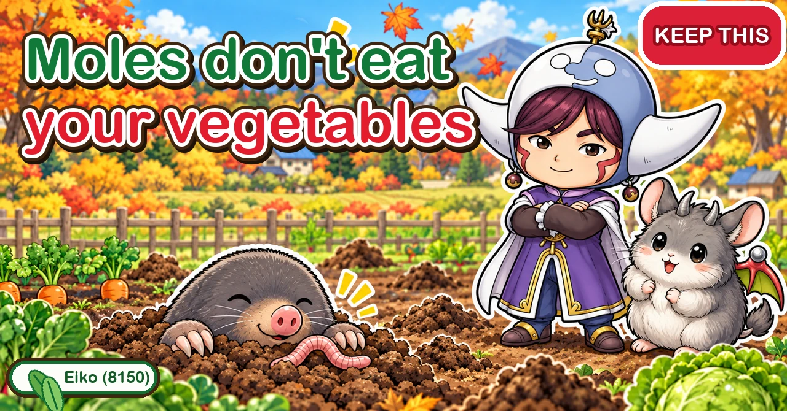

Moles in the veg patch: find the main runway first 🐾 Telling them from mice, U-pins and chillies

🐾 "Little mounds of soil appeared overnight."
🐾 "Half a row of seedlings never came up."
🐾 "I've tried everything and nothing works."
Hello, I'm Eiko. Eight years of growing vegetables organically and without pesticides, and a teaching licence in science.
Sooner or later, most vegetable growers meet a mole. And the advice out there is all over the place — for every "this got rid of them" there's a "nothing I tried made any difference."
This article starts with what kind of animal a mole is, then goes through telling it apart from other culprits, how the damage shows, finding the runway it actually uses, and two cheap ways to protect your crops. Where something is well established and where it's closer to folklore, I've said so.
① What a mole is
It eats worms and soil insects — not your vegetables
A mole is a meat-eater. Agricultural guidance from Tokyo lists earthworms, beetle grubs, snails, slugs, spiders, millipedes and frogs on its menu. It doesn't eat roots, tubers or bulbs. That's the most important starting point for everything that follows.
A huge appetite
The same guidance says a mole is thought to need between half and all of its own body weight in food every day, and may dig tens of metres of tunnel a day finding it. All those ridges across the bed are a mole that never stops searching.
Nose and touch, not eyes
Living underground, moles barely use their eyes. Their sense of smell, touch and hearing are said to be very sharp. That's the basis of the home-garden methods below: they avoid strong smells, and turn back when they bump into something.
Most active morning and evening
Mole activity is fairly regular through the day, busiest in the morning and evening. That's why fresh mounds so often greet you first thing — and why a morning walk round is the best time to spot changes.
Not all tunnels are equal
The nest is usually in a bank, with several runs leading off it. The runs between nest and feeding ground are used again and again; others are used now and then, or dug once and abandoned. The first kind is the main runway. Whether your efforts work depends almost entirely on telling them apart.

What this diagram says （図解の文字）
- If it's been gnawed, it isn't a mole
- "Mole" — "it eats earthworms and soil insects", "it doesn't gnaw vegetables", "roots get cut and the plant wilts" → "just raised soil and a tunnel"
- "Mouse" — "if there are bite marks, it's this one" → "gnawed means mouse"
- "The tricky part: mice use the runs moles dig" — "so fewer mole runs also means fewer mice"
- "Blame the wrong culprit and your whole plan misses"
② Is it really a mole?
Start dealing with the wrong animal and you'll put in a lot of work for no change. Check first.
- Raised runs or mounds, no bite marks: mole
- Teeth marks on carrots, radishes or sweet potatoes, holes in tubers: mice or voles. They eat roots, tubers and bulbs
- No tunnels, but young plants collapsing at the base: soil caterpillars such as cutworms. Scratch the soil round the stem — a curled-up grub nearby gives it away
- A container plant wilting: not a mole. Think chafer grubs, rootbound roots, or too much or too little water
The awkward bit is that moles and mice aren't unrelated. Mice use mole runs as roads, and Tokyo's guidance notes this can make mouse damage worse. Runs and bite marks may well mean both. Cutting down mole runs cuts down mouse roads too.
③ How the damage shows
- Plants wilting: a run under a plant cuts roots or leaves air round them, so they can't take up water. Part of a row flops sideways, and digging finds a tunnel underneath
- Seeds that never come up: the hardest to undo. A run through a freshly sown row churns the soil, shifts the seed and dries it out. With fine seed like carrots, you get a gap-toothed row exactly along the run
- Roots and tubers that don't size up: sweet potatoes and peanuts suffer when the soil round their roots is disturbed. Moles can turn up in peanut rows just as the pods form
- Seedlings lifted and toppled: new transplants haven't rooted yet, and a run underneath can lift them clean out
- Crumbling edges: banks and bed edges collapse more easily
- Fewer earthworms: easy to overlook, but moles eat a lot of the creatures that keep your soil in good shape
Signs a mole has been through
- Raised ridges where it tunnelled near the surface — they feel spongy underfoot
- Mounds (molehills) of soil pushed up from deeper digging
- Mulch film pushed up in a line. Mulch only covers the surface; it won't stop a mole underneath
- A plant that wobbles or feels hollow underneath

What this diagram says （図解の文字）
- Tread it flat, look again the next day
- "The day you find it" — "soil in the bed is pushed up" → "tread it flat" — "no tools needed" → "next day or the day after": "pushed up again" ◯ "this is the main runway" ／ "still flat": "a run it no longer uses"
- "Main runway = used all the time, the commuter route" — "set things here only"
- "Side runs = dug once looking for food or water" ✕ — "putting things here does nothing"
- "Most 'I tried it and it didn't work' stories were set in side runs"
④ Find the main runway — the step that decides everything
Whatever method you choose, put it in the wrong run and it won't work.
- The main runway links the nest to the feeding ground. The mole goes back and forth along it. Block it and the mole quickly digs it out again
- Side runs are dug to look for food or water. Many are used once and never again
Put chillies or pins in a side run the mole no longer uses and nothing happens. A lot of the "I tried it and it didn't work" stories are probably side runs.
How to tell them apart — no tools, just your feet
- Step 1: tread the raised runs and the ground round the mounds flat
- Step 2: push a marker stick in where you trod
- Step 3: go back the next day or the day after
- Step 4: pushed up again? That's a main runway. Still flat? A side run, or one that's been abandoned
Tread several places at once and you start to see how the traffic flows across your plot.
The molehill itself isn't the road
A mound is spoil pushed out of the tunnel. Tokyo's guidance says plainly that the raised mound is not the passage. Set things not under the mound but in the run that links one mound to the next — the one that pushes back up after you tread it.
Flattening molehills every time you see them is fine, but it isn't control: on a main runway the mole just digs again. Think of flattening as surveying — a spot that pops back up overnight is telling you where the main runway is.

What this diagram says （図解の文字）
- Two methods that cost almost nothing
- "① Block the way with U-pins" — "20–30 cm", "four at the base, two across and two along", "to protect a whole bed, set them closer together", "it bumps into them and turns back" ／ "no need to put them where there are no runs"
- "② Chillies in the main runway" — "open the runway" → "put in chopped chillies" → "fill it back in" ／ "moles can't see, so they're very sensitive to smell" ／ "no use in side runs — tread first and narrow down the main runway"
- "Don't plant daffodils or red spider lilies" — "daffodil leaves look just like garlic chives, and people are poisoned by mistake every year"
- "Catching them needs a permit. Keeping them away is far easier" (this is the rule in Japan)
⑤ Method 1: U-pins around the roots
A mole that bumps into something underground turns back. So you bury obstacles round the plants you want to protect. Use mulch or landscape-fabric U-pins, or stout wire bent into a U, about 8–12 in (20–30 cm) long.
- One plant: push in four pins around it — two in line with the row, two across it, boxing the plant in
- A whole bed (peanuts, for example): run pins right round the bed, set fairly close together so there's no gap to slip through. It takes a lot of pins, but it's well worth it for a crop that grows underground in a spot where moles turn up every year
- On the main runway: push pins across the runway to block it, and the mole changes direction
There's no need to pin plants where there are no runs at all — protect the plants a run is heading for. Four pins a plant means twenty for five plants; start with the plants in trouble and add more if needed.
Keep the pins a little away from the stem so you don't damage roots, and remember where you put them — a forgotten pin can damage tools or hands when you dig next season.
⑥ Method 2: chillies in the main runway
Moles are sensitive to smell. Put something strong-smelling inside the main runway and you can hope the mole will avoid it and move elsewhere.
- Open the main runway (the one you confirmed by treading) with a trowel
- Drop in chopped chillies
- Fill the hole back in as it was
It costs almost nothing. But again: main runway only. In a side run, the mole will never meet the smell.
The smell fades with time. If fresh mounds appear in the same area, tread again, find the runway, and top up. Wear gloves to chop chillies, and don't rub your eyes — wash your hands well afterwards.
Other smell-based ideas get passed around — burying a cup of captured stink bugs near a run, or planting garlic — but even the people describing them say "apparently" or "it might." Try them if you like, but find the main runway first and combine them with pins or chillies.
⑦ Sound, plants and other methods — how solid are they?
- Sound and vibration: spiked sonic devices, or a windmill on a stick (easily made from a plastic bottle). Agricultural guidance lists them as one option, but I couldn't find figures for how far or how long they work. Try them alongside other methods and watch the result in your own garden
- Strong-smelling plants: daffodils and red spider lilies are often said to keep moles away. Two problems. First, the reason isn't clear — these plants have poisonous bulbs, but moles don't eat bulbs anyway, and I found no records of it being tested. Some sources say the target is mice, which do eat bulbs, and that makes more sense. Second, safety: daffodil leaves look very like garlic chives, and in Japan people are poisoned every year by eating them by mistake — the health ministry recorded 74 cases and 227 people affected from 2015 to 2024, including deaths. Don't plant daffodils in a bed where you grow chives, onions or other alliums
- Removing their food: killing earthworms and grubs with soil treatments or insecticides. Hard to choose in an organic garden — and worms are what build your soil. A mole visiting is partly a sign your soil is full of life
- An underground barrier: moles tunnel at most about 3 ft (1 m) deep, so netting or a trench of that depth round the plot does block them. Reliable, but a big job — realistic for a small bed or a corner you really need to protect
- Pouring water down the hole: I found nothing showing it works, and waterlogged soil is bad for your vegetables' roots too. Not recommended
When mice are involved too
- Cut the long grass. Field mice like weedy cover, and Tokyo's guidance lists clearing round the plot as a key measure. Piles of materials left lying around are hiding places too
- Mice move about, between gardens, houses and rough grass, so a small plot alone can't keep them out completely
- If you use rodent bait, follow the label exactly and keep it away from children and pets. Moles eat meat, so mouse bait does nothing about moles
- Owls and some snakes eat mice; one orchard study reported fewer mice where owls nested
What about trapping?
Rules differ from country to country, so check yours. In Japan, moles are protected wild animals and trapping them generally needs a permit; the environment ministry exempts farmers controlling moles and mice within their own work, but doesn't say whether a home vegetable garden counts. Either way, keeping them away from the places you want to protect is far easier than catching them — and both methods above work on that principle.
⑧ Crop by crop: when to be on guard
- Carrots and leafy crops: from sowing until the seedlings are up. Check for runs near the row before sowing, and pin round the row if one is close. Re-sow any gaps
- Sweet potatoes: the early weeks, before the roots are established. Look at nearby runs when you plant
- Peanuts: when the pods are forming underground — the crop best suited to a full ring of pins
- Transplanted crops (tomatoes, aubergines, cabbages): just after planting. Firm the soil round each one and check for wobbling for a few days
- Potatoes and squash: if part of the plant suddenly wilts, look for a run underneath, confirm the runway, and pin round the healthy plants next to it
⑨ A one-week plan
- Day 1: look for bite marks and grubs to identify the culprit. Tread several raised runs flat and mark them. Pin any plants that need protecting now
- Days 2–3: walk round the markers. Wherever the soil is pushed up again, that's a main runway
- Same day: open the runway, add chopped chillies, fill it in. If the runway heads for plants you want to protect, pin across it
- One week on: look for new mounds. If there are any, start again from treading
Sketch a rough map of your plot with mounds, main runways and pins marked. Runways often stay much the same from year to year, so the map tells you where to protect before you sow next season — and stops you forgetting pins.
As for timing: mounds often become noticeable in autumn, when it turns cooler and wetter — just as autumn sowing and planting begin. There's no set season for dealing with moles: the day you spot a mound is the day to start. Make a habit of walking round before every sowing or planting.
⑩ Common mistakes and questions
- Treating every hole. Time and materials wasted on side runs. Narrow it down by treading first
- Mole measures for mouse damage. If there are bite marks, mole methods won't stop it
- Pins everywhere. Use them only round the plants you need to protect and where runs are approaching
- Thinking it's over. Moles come back by other routes. Keep checking
Does a mole mean bad soil? Rather the opposite — it came for worms and insects, so your soil is full of life.
Will it leave on its own? Not while there's food. Decide what to protect and keep it away from there.
Where does it come from? Nests are usually in banks or rough ground outside the plot. If a main runway leads off the plot, that's the entrance — protect the beds nearest it first. On an allotment or shared plot, it's worth talking to whoever manages the site.
What do I do with the molehill soil? It's just soil. Rake it level, use it to repair any crumbled bed edges — and do your treading test at the same time.
Science bit: why moles never stop digging 🔬
A mole's tunnels aren't just a home. They're a hunting trap: as it digs, worms and insects drop out of the walls and it eats them. Needing half to all of its body weight in food a day, it has every reason to keep digging.
But digging new tunnel all the time would be exhausting. So it keeps the useful routes and uses them again and again — that's the main runway. It's back the morning after you tread it flat because it matters that much to the mole.
And its weakness is its strength. Because it feels its way by smell and touch, it avoids strong smells and turns back from things it bumps into. U-pins and chillies both turn the mole's sharp senses against it.
To sum up
- ✅ Moles eat meat, not vegetables. Bite marks mean mice — which also use mole runs
- ✅ Damage shows as wilting, gaps in rows, toppled transplants and undersized tubers
- ✅ Tread runs flat; the ones that pop back up in a day or two are main runways. Work only on those
- ✅ U-pins 8–12 in (20–30 cm), four around each plant, or a close ring round a whole bed
- ✅ Chopped chillies in the main runway, filled back in
- ✅ No figures found for sound or plant methods — and keep daffodils away from your chives
- ✅ Protect newly sown rows and new transplants first
Moles come to gardens with living soil. Rather than trying to drive them out altogether, pick the places that matter and simply don't let them through there — it makes the whole thing much less stressful. Start by treading on that raised run 🐾
Thank you for reading!